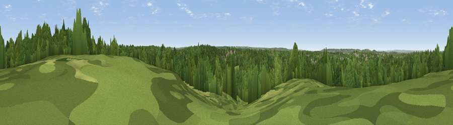

Viewpoint near Grove Park
#43374 in England · top 65% of its area beats it · near Grove Park · access?Where it is
The exact computed spot (TQ 41825 70925). Click the marker for map links.
Public access: no public right of way or access land is recorded at this exact spot — it may be on private land. Computed from Natural England's CRoW access layer and OpenStreetMap rights of way — not the legal definitive map. Always verify locally.
The view, rendered

A 360° render of this exact spot computed from the terrain model, tree cover and land cover — summer colours, afternoon light, calibrated against photographs of famous viewpoints. Real trees, hedges and buildings will differ in detail.
The panorama
Grey silhouette: terrain skyline in each direction (720 bearings, Earth curvature and refraction included). Dashed green: skyline with trees (+15 m) and buildings (+8 m) as obstacles. Blue strip: how far the ground is visible on each bearing.
Where the view opens
Wedge length = distance to the farthest visible ground on that bearing (vegetation-aware). Rings at 10, 25 and 50 km.
What fills the view
61% woodland · 24% grassland · 15% built-up
Angular shares of the visible panorama (visual magnitude), not map area. Landscape diversity 0.41 (0–1 Shannon).
Key numbers
More beautiful places nearby
The staircase of upgrades: each row has a higher view potential than everything closer. Driving times are estimates from straight-line distance, calibrated against real road routing — check an actual route before setting out.
| Place | Direction | Drive | Score |
|---|---|---|---|
| Viewpoint near Grove Park | WNW · 2 km | ~4 min | 24.5 |
| Viewpoint near Eltham | NNE · 5 km | ~12 min | 34.0 |
| Viewpoint near Hextable | E · 10 km | ~20 min | 37.6 |
| Viewpoint near Erith | NE · 13 km | ~25 min | 38.9 |
| Viewpoint near Woldingham | SSW · 14 km | ~25 min | 40.1 |
| Viewpoint near Shoreham | SE · 15 km | ~27 min | 40.2 |
| Viewpoint near Brasted | SSE · 15 km | ~27 min | 42.6 |
| Viewpoint near Westerham | S · 15 km | ~27 min | 43.5 |
51.41960, 0.03827 · source: screening · position refined by local search. Computed location — check access rights before visiting.